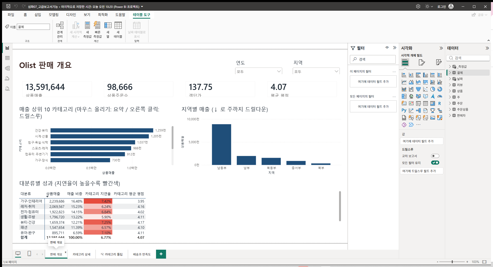
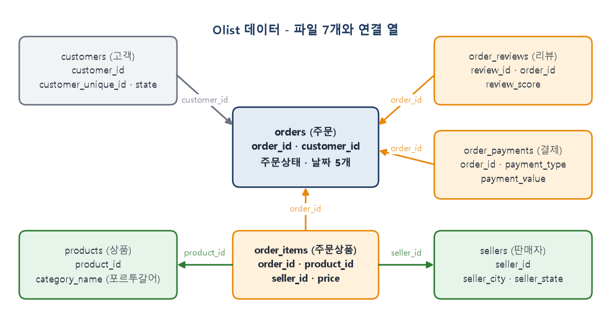

0장. 심화 과정 안내와 Olist 데이터
이 과정에서 만드는 것
기초 과정에서는 가상의 카페 데이터로 대시보드를 만들었다. 심화 과정에서는 실제 회사의 데이터를 다룬다. 브라질의 온라인 쇼핑몰 Olist 가 공개한 2016~2018년 주문 약 10만 건이다.
실제 데이터는 기초 과정보다 훨씬 복잡하다.
- 파일이 7개로 나뉘어 있고, 열 이름이 영어(일부는 포르투갈어)다.
- 주문 하나에 상품·결제·리뷰가 여러 개 붙는다. 테이블끼리의 관계가 복잡하다.
- "배송이 늦었나?", "다시 산 고객은 몇 명인가?" 처럼 조건을 바꿔 가며 계산해야 답할 수 있는 질문이 많다.
이 과정을 마치면 아래와 같은 보고서를 만들 수 있다. 막대에 마우스를 올리면 작은 요약 화면이 뜨고, 카테고리를 오른쪽 클릭하면 상세 페이지로 넘어가는 대화형 보고서다.

이 과정은 기초 과정(1단계)을 마친 학생을 위한 것이다. 데이터 불러오기, Power Query 기본 정리, 관계, SUM·DIVIDE 측정값, 차트·슬라이서를 이미 안다고 보고 진행한다. 기억이 나지 않으면 기초 교안의 해당 장을 먼저 보자.
진행 순서 (약 24시간)
| 장 | 내용 | 시간 | 완성 파일 |
|---|---|---|---|
| 0장 | 과정 안내, Olist 데이터 이해 | 1 | - |
| 1장 | 여러 파일 불러오기와 매개 변수 | 2 | 심화01_여러파일과매개변수.pbix |
| 2장 | Power Query 심화 - 병합과 조건 열 | 3 | 심화02_병합과조건열.pbix |
| 3장 | 데이터 모델링 심화 - 여러 사실 테이블, 비활성 관계 | 2.5 | 심화03_모델링.pbix |
| 4장 | DAX 심화 ① CALCULATE | 3 | 심화04_CALCULATE.pbix |
| 5장 | DAX 심화 ② 반복 함수와 시간 인텔리전스 | 3 | 심화05_시간인텔리전스.pbix |
| 6장 | 분석 실습 - 배송과 고객 만족도 | 2 | 심화06_배송과만족도분석.pbix |
| 7장 | 고급 보고서 기능 - 드릴다운, 드릴스루, 도구 설명, 조건부 서식 | 3 | 심화07_고급보고서기능.pbix |
| 8장 | 행 수준 보안(RLS)과 성능 점검 | 1.5 | 심화08_행수준보안.pbix |
| 9장 | 프로젝트 - 판매자 성과 대시보드 혼자 만들기 | 3 | 심화09_프로젝트_판매자성과_풀이.pbix |
| 10장 | (선택) PostgreSQL 데이터베이스에 연결하기 | 2 | - |
부록: A 오류 해결 · B 용어 풀이 · C 확인 문제 풀이
공부하는 방법은 기초 과정과 같다. 장마다 학습 목표 → 따라 하기 → 정리 → 확인 문제 순서이고, 막히면 pbix 폴더의 완성 파일을 열어 비교한다. 완성 파일은 모두 심화 로 시작한다.
0-1. 실습 파일 준비
기초 과정에서 받은 C:\study\power-bi-tutorial 폴더를 그대로 쓴다. 심화 데이터는 그 안의 data\olist 폴더에 있다.
기초 과정 뒤에 저장소가 바뀌었을 수 있다. 폴더에
data\olist가 없으면 ZIP 을 다시 받아 풀거나, Git 으로 받았다면C:\study\power-bi-tutorial에서git pull을 실행한다.
C:\study\power-bi-tutorial\data\olist
├─ olist_orders_dataset.csv 주문 (99,441건)
├─ olist_order_items_dataset.csv 주문상품 - 주문에 들어 있는 상품 (112,650줄)
├─ olist_order_payments_dataset.csv 결제 (103,886줄)
├─ olist_order_reviews_dataset.csv 리뷰 (100,000건)
├─ olist_customers_dataset.csv 고객
├─ olist_products_dataset.csv 상품 (32,951개)
├─ olist_sellers_dataset.csv 판매자 (3,095곳)
├─ product_category_name_translation.csv 카테고리 이름 포르투갈어 → 영어
├─ 카테고리_한글.csv 카테고리 영어 → 한글, 대분류 (이 과정에서 만든 파일)
├─ 브라질_주.csv 주 약어 → 한글 주 이름, 지역 (이 과정에서 만든 파일)
└─ Olist_테마.json 보고서 색 테마
데이터 출처 - Olist, "Brazilian E-Commerce Public Dataset by Olist", Kaggle. 라이선스 CC BY-NC-SA 4.0 (출처를 밝히고 비상업적으로 쓸 수 있다). 위치 정보 파일(geolocation)은 크기가 커서 이 과정에서는 뺐다.
0-2. Olist 데이터 이해하기
Olist 는 작은 가게들이 큰 쇼핑몰에 상품을 올려 팔 수 있게 도와주는 회사다. 그래서 데이터에 고객과 판매자가 따로 있다. 고객이 주문하면, 그 주문 안의 상품은 서로 다른 판매자가 보낼 수도 있다.

| 테이블 | 한 줄이 뜻하는 것 | 연결 열 | 이 과정의 이름 |
|---|---|---|---|
| orders | 주문 하나 | order_id, customer_id | 주문 |
| order_items | 주문 안의 상품 하나 | order_id, product_id, seller_id | 주문상품 |
| order_payments | 결제 하나 (나눠 내면 여러 줄) | order_id | 결제 |
| order_reviews | 리뷰 하나 | order_id | 리뷰 |
| customers | 주문할 때의 고객 정보 | customer_id | (주문에 합친다) |
| products | 상품 하나 | product_id | 상품 |
| sellers | 판매자 하나 | seller_id | 판매자 |
알아 둘 점 세 가지.
- 주문상품의 한 줄 = 상품 한 개. 같은 상품을 2개 사면 두 줄이 된다. 그래서 매출은 주문상품의
price를 더하면 된다 (수량 열이 없다). - customer_id 는 주문마다 새로 생긴다. 같은 사람이 두 번 주문하면 customer_id 는 둘이고, customer_unique_id 가 같다. 재구매 고객을 셀 때는 unique_id 를 써야 한다.
- 돈의 단위는 브라질 헤알(R$) 이다. 이 교안에서는 숫자만 쓰고 "헤알" 이라고 읽는다.
0-3. 심화 과정에서 새로 배우는 것
| 기초 과정에서 | 심화 과정에서 |
|---|---|
| 파일 경로를 식에 직접 적었다 | 매개 변수 하나로 모든 파일 경로를 관리한다 |
| 값 바꾸기, 빈 행 거르기 | 테이블 병합, 조건 열, 로드하지 않는 도우미 쿼리 |
| 사실 테이블 1개 + 차원 테이블 | 사실 테이블 여러 개, 필터 방향, 비활성 관계 |
| SUM, DISTINCTCOUNT, DIVIDE | CALCULATE, REMOVEFILTERS, VAR, SUMX, FILTER, 시간 인텔리전스 |
| 차트와 슬라이서 | 드릴다운, 드릴스루, 도구 설명 페이지, 조건부 서식, 상위 N |
| - | 행 수준 보안(RLS), 성능 분석기 |
정리
- Olist 는 실제 브라질 쇼핑몰 데이터다. 주문·주문상품·결제·리뷰·상품·판매자 등 여러 파일로 나뉘어 있다.
- 주문상품 한 줄은 상품 한 개다. 매출 = price 의 합.
- 같은 사람을 찾으려면 customer_id 가 아니라 customer_unique_id 를 쓴다.
확인 문제
- 고객이 상품 3개를 한 번에 주문하고, 신용카드와 바우처로 나눠 냈다. 주문·주문상품·결제 테이블에 각각 몇 줄이 생길까?
- 같은 고객이 1월과 3월에 한 번씩 주문했다. customers 파일에는 이 사람이 몇 줄 있을까? 두 줄에서 같은 값을 가진 열은 무엇인가?
- 메모장으로
olist_orders_dataset.csv를 열어 첫 줄(열 이름)을 보자. 날짜·시간이 들어 있는 열은 몇 개인가?